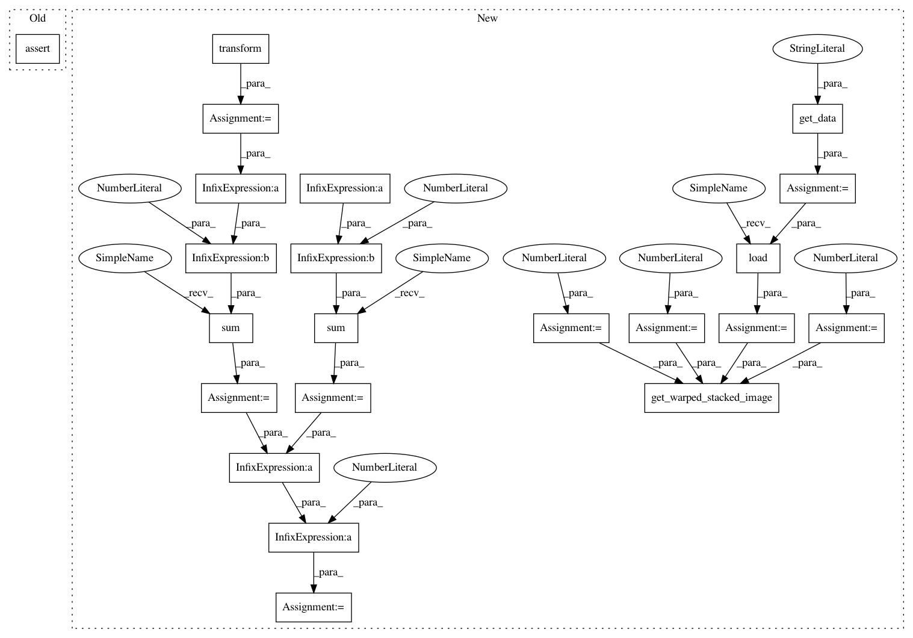

c7c80b8429ab70ea3b4d17451eac9cd5020e68a8,dipy/align/tests/test_imwarp.py,,test_em_2d_gauss_newton,#,822
Before Change
[2.50773392, 0.41763383, 0.30908578, 0.06241115, 0.11573476,
2.48475885, 1.10053769, 0.9270271, 49.37186785, 44.72643467]
assert_array_almost_equal(energy_profile, np.array(expected_profile),
decimal=5)
@npt.dec.skipif(NO_SSE2)
def test_em_3d_demons():
After Change
matches the saved one.
"""
fname = get_data("t1_coronal_slice")
nslices = 1
b = 0.1
m = 4
image = np.load(fname)
moving, static = get_warped_stacked_image(image, nslices, b, m)
//Configure the metric
smooth=5.0
inner_iter=20
q_levels=256
double_gradient=False
iter_type="gauss_newton"
metric = metrics.EMMetric(
2, smooth, inner_iter, q_levels, double_gradient, iter_type)
//Configure and run the Optimizer
level_iters = [40, 20, 10]
optimizer = imwarp.SymmetricDiffeomorphicRegistration(metric, level_iters)
optimizer.verbosity = VerbosityLevels.DEBUG
mapping = optimizer.optimize(static, moving, None)
m = optimizer.get_map()
assert_equal(mapping, m)
warped = mapping.transform(moving)
starting_energy = np.sum((static - moving)**2)
final_energy = np.sum((static - warped)**2)
reduced = 1.0 - final_energy/starting_energy
assert(reduced > 0.9)
In pattern: SUPERPATTERN
Frequency: 4
Non-data size: 22
Instances
Project Name: nipy/dipy
Commit Name: c7c80b8429ab70ea3b4d17451eac9cd5020e68a8
Time: 2015-12-16
Author: jomarocegueda@gmail.com
File Name: dipy/align/tests/test_imwarp.py
Class Name:
Method Name: test_em_2d_gauss_newton
Project Name: nipy/dipy
Commit Name: c7c80b8429ab70ea3b4d17451eac9cd5020e68a8
Time: 2015-12-16
Author: jomarocegueda@gmail.com
File Name: dipy/align/tests/test_imwarp.py
Class Name:
Method Name: test_em_3d_gauss_newton
Project Name: nipy/dipy
Commit Name: c7c80b8429ab70ea3b4d17451eac9cd5020e68a8
Time: 2015-12-16
Author: jomarocegueda@gmail.com
File Name: dipy/align/tests/test_imwarp.py
Class Name:
Method Name: test_em_2d_gauss_newton
Project Name: nipy/dipy
Commit Name: c7c80b8429ab70ea3b4d17451eac9cd5020e68a8
Time: 2015-12-16
Author: jomarocegueda@gmail.com
File Name: dipy/align/tests/test_imwarp.py
Class Name:
Method Name: test_em_3d_demons
Project Name: nipy/dipy
Commit Name: c7c80b8429ab70ea3b4d17451eac9cd5020e68a8
Time: 2015-12-16
Author: jomarocegueda@gmail.com
File Name: dipy/align/tests/test_imwarp.py
Class Name:
Method Name: test_em_2d_demons